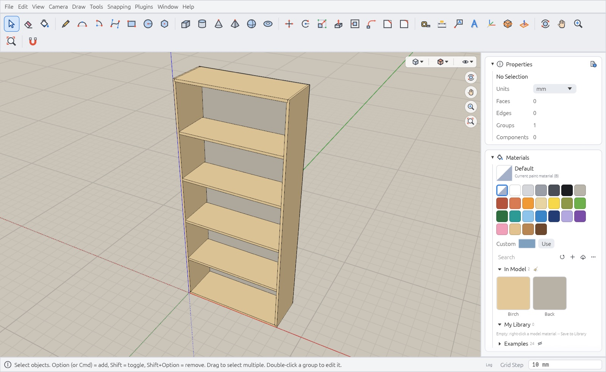
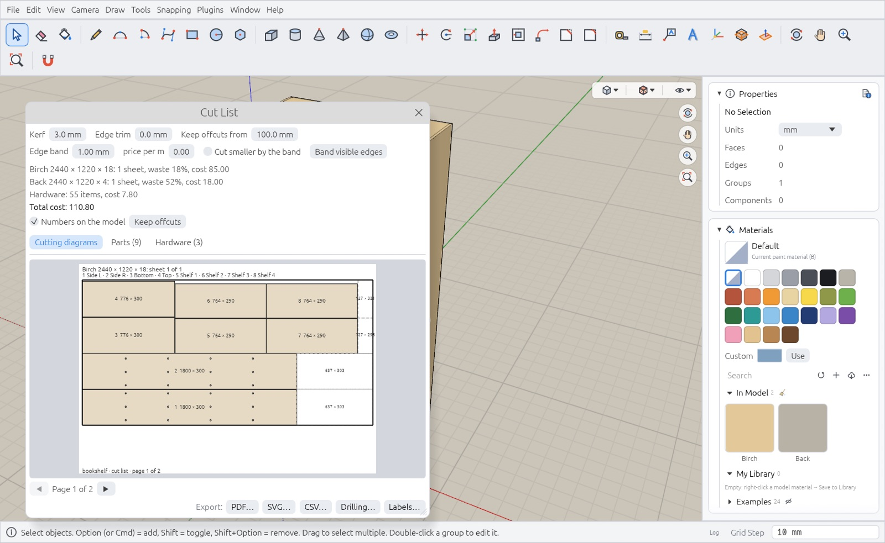
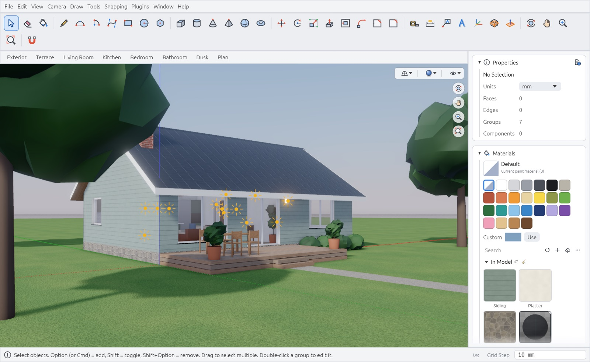
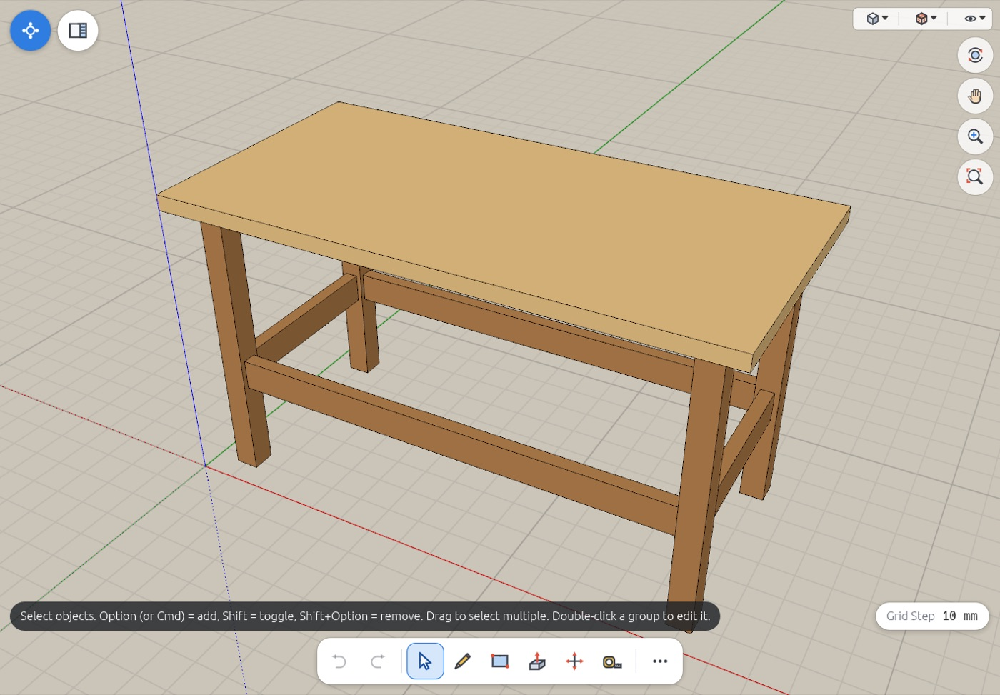
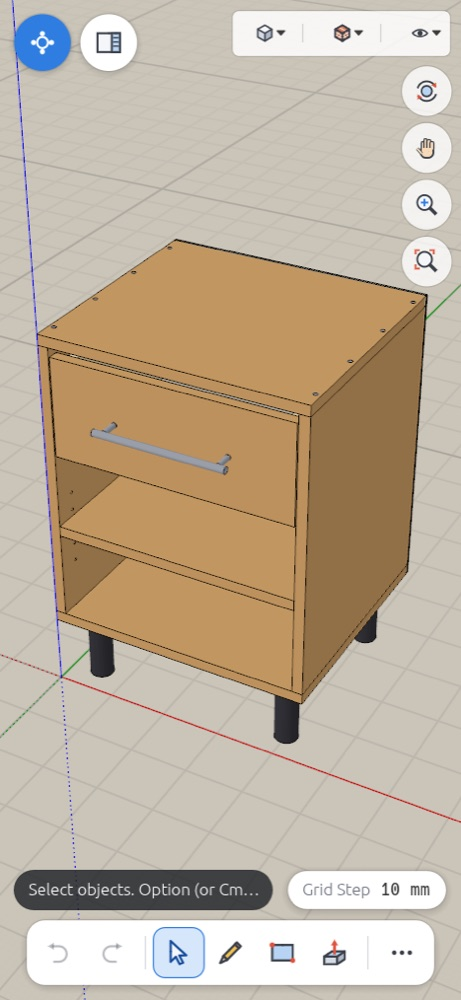
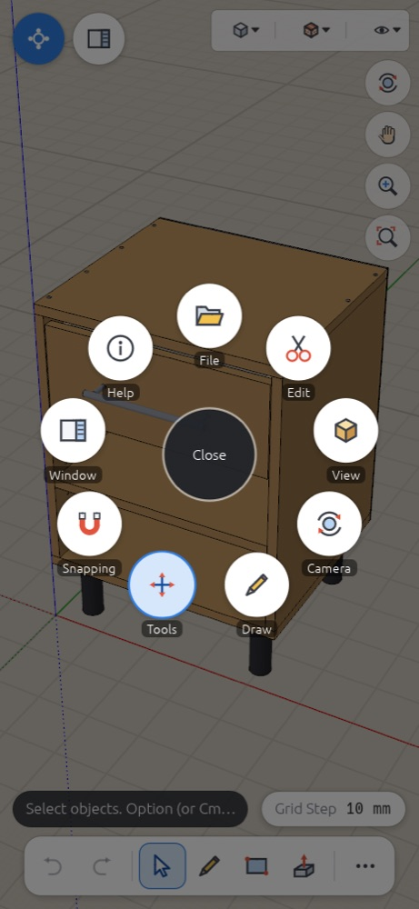

Direct modelling
Lines, arcs, curves, Push/Pull, Offset, Sweep, chamfers and fillets, with inference snapping and exact typed values.
macOS · Windows · Linux · browser
Plan furniture, workshop projects and 3D prints in real millimetres, then take the dimensions to the workshop or the model to a slicer. Free and open source.
Nothing to install: the browser version needs WebGPU (a recent Chrome or Edge, Safari 26 or later, Firefox on Windows).
Lines, arcs, curves, Push/Pull, Offset, Sweep, chamfers and fillets, with inference snapping and exact typed values.
Parts laid out on sheets and boards for straight saw cuts: cutting diagrams, offcuts kept for the next project, waste, shopping list and cost as PDF, SVG or CSV.
Dowels, screws, pocket holes, mortise and tenon, box joints and dovetails cut into the parts; confirmats, hinges, slides, handles and drawers.
An exploded view, assembly steps with the fasteners and a printable instructions booklet.
Checks and repair, wall-thickness maps, cutting with dowels, bed layout, STL and 3MF export.
PBR materials and a UV editor, a realistic real-time style with shadows and reflections, a GPU path tracer.
Material and component trays, online models and materials, parametric generators for shelves, stairs and railings.
A Rhai console and plugins, a Python client and an MCP server for AI agents.
A compact interface for tablets and phones: a menu ring, a dock, a number pad, the pen and palm rejection.
Import glTF, OBJ, STL, FBX, 3MF, DXF and more; export glTF, OBJ, STL, 3MF and PNG; unfold to SVG, PDF and DXF.







Native on macOS, Windows and Linux, and in the browser. On a tablet or a phone the compact interface turns on by itself: big targets, a menu ring, the tools in a dock and the panels in a sheet.



Nothing to install; documents open from your disk and save back to it.
Open Varstotas11 or later, Apple Silicon and Intel: a .dmg or Homebrew.
brew tap dirondin/tap
brew install --cask varstotas10 or later, x64 and Arm: an installer, a portable .zip or Scoop.
scoop bucket add dirondin https://github.com/dirondin/scoop-bucket
scoop install dirondin/varstotasx86_64 and Arm64: an AppImage, a .deb or a .tar.gz.